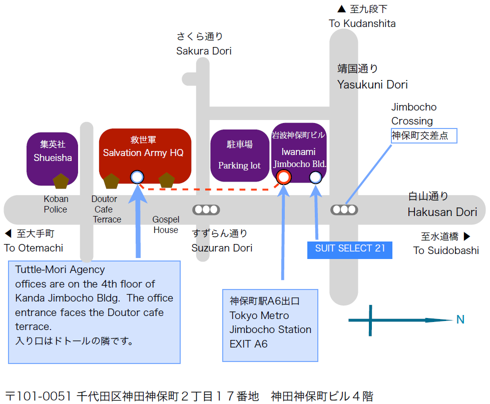

Map
-- To download a printable A4 version of map click HERE (PDF)--

Directions to the Tuttle-Mori Agency offices
Address: Kanda Jimbocho Bldg., 4th floor,
2-17 Kanda Jimbocho, Chiyoda-ku, Tokyo 101-0051
TEL +81(0)3 3230 4081
URL https://www.tuttlemori.com
By taxi - please say "Jimbo-cho" and show this map to the driver.
By subway: Get off the train at Jimbocho Station (Hanzomon line Z-07, or Shinjuku line S-06, or Mita line I-10). Take exit A6 to street level, turn right along street, go past the supermarket to the second entrance of the Salvation Army HQ building. The entrance is beside the Doutor Cafe Terrace.
Please take the elevator to 4th floor.